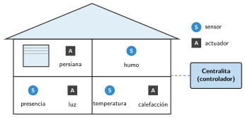

La domótica: la casa como sistema de control
🤔 Pienso5 min
Qué hago aquí: Piensa un momento y contesta con lo que ya sabes. No pasa nada si no lo sabes: es para empezar.
Escribe dos cosas de tu casa o del colegio que se enciendan o se muevan solas.
📖 Leo y aprendo15 min
Qué hago aquí: Lee despacio, mira los dibujos y los ejemplos, y quédate con la idea clave del final.
Una casa también puede ser un sistema de control. Esto se llama domótica.

La domótica sirve para:
- Comodidad: encender la calefacción antes de llegar.
- Seguridad: avisar al móvil si hay humo.
- Ahorro: apagar las luces de las salas vacías.
- Accesibilidad: abrir la puerta con la voz.
✏️ Hago25 min
Qué hago aquí: Haz las actividades en orden. Empieza siempre por las básicas.
Mira el dibujo de la casa. Escribe dos sensores y dos actuadores.
Completa la tabla.
| Situación | Sensor | Actuador |
|---|---|---|
| Hay humo en la cocina | ||
| La casa está fría | ||
| Alguien entra en el pasillo |
¿Para qué sirve la domótica? Escribe dos cosas.
Diseña algo domótico para el aula: qué quieres que pase, con qué sensor y con qué actuador.
✏️ Puedes responder escribiendo, con un dibujo o un esquema, o contándolo en voz alta.
🚀 Amplío (si quieres saber más)
Qué hago aquí: ¿Has terminado? Lee la curiosidad o elige el reto. Es voluntario.
¿Qué problema de privacidad puede tener un altavoz inteligente? ¿Cómo lo resolverías?
✅ Compruebo5 min
Qué hago aquí: Contesta sin mirar la ficha y marca cómo lo llevas.